Archive Online — Post-Collapse Year 2157
Echoes
of Earth
An exploration of decay — what remains when humanity falls silent and time reclaims everything we built.
Scroll
An exploration of decay — what remains when humanity falls silent and time reclaims everything we built.
> SYSTEM INITIALISED — ECHOES_OF_EARTH_ARCHIVE v2.1.57
----------------------------------------
> Loading sector data... OK
> Cross-referencing decay index... OK
> WARNING: Human activity signal — NONE DETECTED
----------------------------------------
> Three primary decay vectors identified: URBAN / NATURAL / TECHNOLOGICAL
> Begin archive traversal: select a sector below_
When the last human hand stopped its work, entropy did not pause.

Chapter 01
Steel fractures. Roads buckle. The city becomes a monument to impermanence.
Enter chapter →
Chapter 02
Roots split asphalt. Rivers return. Earth digests everything left behind.
Enter chapter →
Chapter 03
Servers fall silent. Satellites drift. The digital world dissolves.
Enter chapter →"Nature does not hurry, yet everything is accomplished — even the undoing of ten thousand years of human industry."
— Echoes of Earth Archive, Vol. I

Chapter 01 — Urban Decay
Steel and concrete yielded first. Within decades, the towers that once defined skylines began to fracture — their windows hollow eyes staring into a changed sky.
Most reinforced concrete fails within half a century once maintenance stops completely.
Water ingress alone accounts for the majority of post-abandonment structural failure.
Frost cycles and root growth fracture asphalt within a single generation.
The last mechanical sound fades within months. The city breathes differently now.
Observation 01
The towers did not fall all at once. They came apart piece by piece — first the glass, then the cladding, then the steel beneath. Water found every crack. Frost prised every joint. What once took decades to build dissolved in the same time.
The skyline, once a declaration of human ambition, became a jagged silhouette of rust and shadow — beautiful in its ruination, terrible in what it implied.
Observation 02
At ground level, the transformation was slower and more intimate. Shop fronts gaped open. Cars became planter boxes. The tarmac lifted in great slabs as the roots of a thousand saplings found their way beneath.
Within a century, what had been a high street was indistinguishable from a forest path — save for the occasional glimpse of ceramic tile or faded signage still legible beneath the moss.

Urban decay is not destruction — it is transformation. The structures we built were never permanent; they required constant intervention to maintain the illusion of solidity. Remove the human hand and the entropy begins immediately.
Research into real-world examples — from the abandoned city of Pripyat to the ruins of Detroit's industrial heart — shows that nature does not wait. Within years, not decades, the biological world colonises every available surface. Buildings become terraria. Roads become rivers.
The Last of Us imagines overgrown American cities with uncanny specificity. Metro Exodus traces the ruins of Moscow outward into a contaminated wilderness. These works understand that ruins are not endings — they are beginnings of something else.

Chapter 02 — Nature Reclaims
Where streets once carried millions, roots split the asphalt. Trees rose through office floors. Rivers reclaimed their ancient paths. The earth, patient and indifferent, began its slow digestion.
Pioneer species colonise roads and car parks within a single generation.
Without human pressure, rewilding accelerates faster than any conservation effort.
Industrial pollution clears within decades once the source is removed entirely.
Observation 01
It began with the weeds. Then the shrubs. Then, within a decade, the first saplings pushed through tarmac and tile. By the time they reached window height, the buildings they grew through were already compromised — weakened by roots that found every foundation crack.
A hundred years on, you would not know a city had stood here. Only the occasional rectangle of stone — a former plaza, a courtyard — hints at the geometry beneath the canopy.
Observation 02
Rivers that had been culverted — buried beneath city streets in pipes and tunnels — broke free. Without the constant maintenance of drainage systems, the water found old channels, new ones, carving paths through the rubble of former underground stations and car parks.
Within a generation, rivers glittered through former city centres. Fish returned to waterways that had been biologically dead for two centuries. The water cleaned itself.

Research into rewilding consistently shows that nature's recovery outpaces human expectation. Chernobyl's exclusion zone demonstrated that even heavily contaminated land will eventually support rich biodiversity.
The earth does not mourn our absence. It adapts — rapidly, efficiently, without sentiment. Every crack in every road is an invitation. Every abandoned building is a scaffold for something new.
Horizon Zero Dawn imagines a world fully reclaimed — where nature has won so completely that the memory of cities is archaeological. This project traces the journey between that world and ours.

Chapter 03 — Technological Decay
The servers fell silent. Satellites drifted off course. The digital world, which seemed immortal, dissolved as completely as the flesh it once served — leaving only corrupted traces of what was.
All internet infrastructure requires constant maintenance. Without it, collapse is rapid.
Without human maintenance, power stations and distribution networks fail within years.
Data stored on servers that lose power is eventually unrecoverable. History, erased.
Observation 01
The servers outlasted almost everything. In the years after the grid failed, battery backups ran for days, then hours. One by one, the lights went out — the LEDs that had blinked their status for decades going dark in sequence, like candles snuffed in an empty church.
[SYS] connection timeout — retry 1/3
[SYS] connection timeout — retry 2/3
[ERR] SIGNAL_LOST — host unreachable
[ERR] NULL_PROCESS — shutdown imminent
[WRN] cooling_system — OFFLINE
[SYS] last ping: ████████████ ago
_
Observation 02
Communication towers rusted slowly — their steel lattices becoming abstract sculptures, orange and beautiful in the morning light. The dishes that once aimed at satellites sagged on their mounts, pointed at nothing.
Somewhere in low Earth orbit, satellites continue their journeys — silently, blindly — until atmospheric drag finally pulls them home in a streak of fire. The sky fills briefly with the last light of the information age.

Of all the things we built, technology seemed the most immortal. Data, we told ourselves, was forever. The cloud would persist beyond us. But the cloud was always just someone else's computer — and computers need power, cooling, and the constant attention of skilled engineers.
Metro Exodus captures this disillusionment — a world where technology survives only in fragments, cherished and maintained by those who remember how it worked. The rest rusts into art.
The longest-lasting human artefacts will be analogue — stone carvings, ceramic tiles, perhaps some plastics. The digital record of everything we were will be among the first things to disappear.
// chronology_of_decay
> A civilisation does not end in a single moment. It frays — slowly at first, then faster than anyone anticipated. This timeline traces the decay of everything we built, from the first silent power station to the last unreadable ruin.
// year_01
Power grids fail across continents as maintenance stops. The last city falls into darkness. Food chains collapse within weeks without refrigeration and transport.
infrastructure// year_03
All digital communications cease as servers lose power. Satellites begin decaying orbits. The internet — the entirety of humanity's digital record — goes dark.
technology// year_05
Culverted rivers break through city streets. Drainage infrastructure fails. Former financial districts flood seasonally. Waterfowl return to city centres within months.
nature// year_08
Tree saplings emerge through motorway tarmac. Roof gardens collapse into floors below. Urban foxes and deer reclaim pedestrian zones.
nature// year_12
Pioneer forests emerge on former roads, car parks, and industrial sites. Air quality reaches pre-industrial levels. The silence of cities is replaced with birdsong.
nature// year_25
The last functioning satellites decay from orbit, burning briefly in the atmosphere. The sky is now darker than it has been for centuries — and the stars are visible over former cities.
technology// year_50
Most concrete structures fail as rebar corrodes and expands. Skyscrapers become rubble fields. Bridges buckle. The city skyline disappears.
urban// year_100
Former cities are indistinguishable from ancient forest. The occasional geometry of stone — a former plaza, a courtyard wall — hints at what lies beneath the root systems.
nature// year_200
Soil reclaims foundations. Only the largest objects — dams, motorway embankments, deep harbours — hint at what came before. Everything else has been absorbed.
urban · nature// year_10,000
No trace remains visible. The geological record shows an unusual stratum — the Anthropocene layer — but the earth's surface is unbroken. Earth breathes again.
geological
Virtual Tour — City Archive 07
You are about to enter what was once a major European city. Population: 2.4 million. Abandoned: Year 1 post-collapse. Current status: reclaimed. This cinematic tour documents six locations across the decay zone — scroll to begin.
Stop 01 — Outer Perimeter
You enter from the south motorway. The tarmac has cracked into great grey islands, each one colonised by pioneer grasses and the first spindly birch saplings. Road signs still stand — their destinations no longer relevant.
The checkpoint booth lists slightly to one side. A door hangs open. Inside, a coffee mug sits on a windowsill, a dark ring marking where the liquid evaporated years ago.
"The absence of sound is total. No engines, no voices, no aircraft. Only wind through grass growing between lane markings."

Stop 02 — City Centre
The city's main avenue has been reinterpreted by forty years of unrestrained growth. Young trees have colonised the central reservation, their roots lifting the ornamental paving into a broken mosaic.
The shopfronts are hollow, their glass long fallen. Facades hold their ornate stonework — but the interiors are dark chambers of rust and vine, where pigeons have built generations of nests undisturbed.
"A fox family occupies what was once a luxury hotel lobby. The marble floors are pristine beneath the leaves. The kits play on the concierge desk."

Stop 03 — Transit Hub
The station's Victorian iron roof has held — its great arches streaked with rust and decades of rain. Light falls in cathedral shafts through the broken skylights. The platforms are buried under a foot of leaf litter.
A train sits at platform three — its carriages intact but oxidised to a deep ochre, vines threading through the windows. The departure board is frozen mid-announcement: 07:42 to the capital.
"A peregrine falcon nests in the arrivals hall clock tower. It hunts the pigeons that have colonised the upper galleries."

Stop 04 — Residential Zone
The residential towers were built to last fifty years. At seventy, they are beginning to fulfil that promise. Frost has got into the rebars, which expand as they rust, cracking the concrete outward from within.
Floors 12 through 18 are inaccessible — stairwells collapsed inward six years ago. But floors 1 through 11 are a vertical ecosystem: each flat a different stage of reclamation, from bare concrete to mature woodland interior.
"On the ninth floor, through a window framed in birch, you can see the entire city — a vast, still green, punctuated only by the tallest remaining spires."

Stop 05 — City Panorama
From eleven floors up, the transformation is total. Where once a sea of rooftops and industrial haze stretched to the horizon, there is now an unbroken canopy — punctuated by the tallest spires and occasional rusted masts.
The air is clean. Cleaner than it has been for two centuries. Raptors circle on thermals rising from the dark rooftops below. There is no sound of traffic. Only wind, birdsong, and in the distance — water.
"You could mistake it for a natural forest. Only the geometry betrays it — the too-even spacing of former street grids, now rows of trees."

Stop 06 — Subterranean
Below street level, time moved more slowly. Without frost cycles, the metro tunnels held. The trains are still in their stations — sealed by a century of silt and the patient, downward creep of root systems.
Bioluminescent fungi have colonised entire platforms — a faint blue-green light that needs no power. Blind cave fish have appeared in the flooded lower tunnels. The underground has become its own ecosystem.
"The fungi give off just enough light to see by. It is the most beautiful thing observed on this entire survey. Down here, something new is beginning."

"We did not ask the earth's permission to build our cities. We did not need to. It was always patient enough to wait for them back."
— Echoes of Earth Field Survey, Year 120
// final_major_project
> Echoes of Earth is an interactive website that explores the theme of decay — specifically, how environments change and deteriorate over time after human civilisation disappears. The aim of the project is to create a visually engaging, atmospheric website that demonstrates how structures, technology, and environments gradually break down when removed from human maintenance.
> The website guides users through different sections representing stages of decay: urban decay, nature reclaiming human spaces, and technological decay. Each chapter uses illustrated SVG visuals, atmospheric colour effects, interactive scroll reveals, and carefully chosen typography to create a consistent sense of contaminated atmosphere.
> The project draws on the visual language of post-apocalyptic media — games, film, and photography — to find an aesthetic that is not sensationalist but documentary in tone. These are not warnings. They are records.
THE LAST OF US (Naughty Dog, 2013)
A masterclass in environmental storytelling. Overgrown American cities — hotels thick with clinging vines, rusted skylines — demonstrated how to make decay feel lived-in and specific. Influenced the colour palette and detail level of the chapter illustrations.
METRO EXODUS (4A Games, 2019)
The Metro series' vision of post-nuclear Russia informed the approach to technological decay — the sense that machinery outlasts its usefulness before being consumed by rust and vegetation. The communications tower and server room scenes draw directly from this.
CHERNOBYL EXCLUSION ZONE (Real-world documentation)
Photographic documentation of Pripyat provided factual grounding for the timeline and the urban decay chapter. The rate at which vegetation colonised apartment blocks — faster than expected — shaped the project's chronology.
THE WORLD WITHOUT US — Alan Weisman (2007)
This non-fiction book provided the factual framework for the timeline page, detailing what would realistically happen to human infrastructure and ecosystems over timescales from years to millennia.
HORIZON ZERO DAWN (Guerrilla Games, 2017)
Visualised a world where nature has fully reclaimed human spaces over centuries — the end-state the Echoes of Earth timeline points toward. Informed the nature chapter's sense of completeness in reclamation.
> The website was built using HTML, CSS, and JavaScript — no frameworks or libraries — using Visual Studio Code. All visual scenes are hand-crafted SVG illustrations written directly in code, keeping the site lightweight and scalable without any image files.
> Interactive elements include: a custom trailing cursor, a scroll progress indicator, scroll-triggered fade-up animations via IntersectionObserver, and hover states throughout. Typography pairs VT323 (retro display) with Share Tech Mono and Rajdhani for a contaminated-terminal aesthetic.
Final Major Project
Documenting the creative process from concept to completion — including inspiration, testing, and visual exploration.
The initial proposal outlining the rationale, concept, evaluation, and research sources for Echoes of Earth.
THIS YEAR I HAVE developed significantly as a game's development student. When I first started the course, I had no experience using Unreal Engine 5, Unity, or version control platforms like GitHub. I also had very limited understanding of programming and development workflows. Throughout the year, I have learned how to use game engines to build playable prototypes, create level blockouts, and implement mechanics using Blueprint systems. I have also gained knowledge in web development and basic coding, which has strengthened my problem-solving skills and technical confidence. SO FAR, I HAVE LEARNED that game development is not just about ideas, but about structure, planning, and realistic scope management. My confidence with development tools has improved, and I now feel capable of independently planning and producing a complete project. These skills directly influence my Final Major Project, where I will apply everything, I have learned to create an action-based game exploring the theme of decay.
For my Final Major Project, I will be creating an interactive website titled Echoes of Earth. The website will explore the theme of decay by showing how environments change and deteriorate over time after human civilisation disappears. The aim of the project is to create a visually engaging website that demonstrates how structures, technology, and environments gradually break down. The website will guide users through different sections that represent stages of decay, such as urban decay, nature reclaiming human spaces, and technological decay. To develop my ideas, I will research examples of media that use decay as a theme, including games such as The Last of Us and Metro Exodus, which feature environments that have been abandoned and damaged over time. This research will help influence the visual style and atmosphere of my website. The website will be created using HTML, CSS, and basic JavaScript with a code editor such as Visual Studio Code. The outcome will be a functional website that includes multiple pages, images, and simple interactive elements. The project will be completed within the allocated timeframe and documented through a development blog and practical files.
I will evaluate my project throughout the development process as well as at the end of the project. I will record my decision-making, progress, and any changes to my ideas in my Wix development blog each week. This will help me reflect on what is working well and what may need improvement. I will also gather feedback from users such as classmates or tutors to understand how effective the website is at communicating the theme of decay. This feedback and testing will help me assess whether the project meets its aims and identify areas for improvement.
I will evaluate my project throughout the development process as well as at the end of the project. I will record my decision-making, progress, and any changes to my ideas in my Development Log each week. This will help me reflect on what is working well and what may need improvement. I will also gather feedback from users such as classmates or tutors to understand how effective the website is at communicating the theme of decay. This feedback and testing will help me assess whether the project meets its aims and identify areas for improvement.
Media, sources, and real-world examples that influenced the visual style and content of Echoes of Earth — drawn from the Unit 8 FMP presentation.
Explores decay through a multi-layered approach, examining the rotting of physical, social, and emotional structures years after the initial infection. Nature thrives while human civilisation and morality erode, leaving characters to navigate a desolate landscape both environmentally and emotionally.
This influences my project by showing how decay can tell a story through the environment. I will focus on visual storytelling in my virtual tour rather than heavy gameplay.
Video GamePresents a world where every element — society, infrastructure, and human life — is actively falling apart. Focuses on physical, social, and emotional degradation following total civilisation collapse.
This shows decay on a societal level. I can reflect this by designing environments that suggest abandoned communities and collapsed infrastructure.
Video GameExplores decay through literal environmental storytelling and metaphorical shifts in its franchise identity. Seen in the rotted aesthetic of specific events, post-apocalyptic Zombies modes, and the use of dark, chaotic destroyed environments.
Although my project is not combat-based, this inspires the use of lighting and atmosphere to create tension and unease within a decayed environment.
Video GameExplores decay through a comprehensive, procedural system that simulates the slow, inevitable collapse of civilisation, infrastructure, and bodies over time. The game focuses on the idea that without human maintenance, the world returns to nature.
This demonstrates how decay can create isolation and realism. I can use quiet, empty spaces in my virtual tour to create a similar feeling.
Video GameExplores decay through environmental storytelling, degradation of resources, and the constant assault of the undead on human structures. Emphasises the breakdown of civilisation following a post-nuclear apocalypse.
This game highlights environmental destruction and degradation, which I can reflect through damaged buildings and detailed textures in my environment.
Video GameInfluences the conceptual side of my project by explaining what would happen to the Earth if humans suddenly disappeared. Buildings, roads, cities, and technology would slowly collapse over time without maintenance.
Directly inspired the timeline and progression of decay shown in my project.
BookOne of the biggest real-world influences on my project because it shows how quickly nature can reclaim spaces once humans disappear. The abandoned buildings in Pripyat, covered in overgrown vegetation, show what a realistic post-human environment looks like.
Real World ReferenceUses decay through isolation, ruined landscapes, and the idea of reconnecting a broken world. The environment feels empty and damaged, creating emotional atmosphere without relying on combat or dialogue.
Video Game| Pillar | Basic (literal) | Complex (meta) | Method, Technique / Process |
|---|---|---|---|
| Biological | Rotting flesh, disease, aging, decomposition | Mortality, entropy of the body, genetic decline, corruption of life systems | Putrefaction, mutation, infection, erosion through time |
| Digital | File corruption, dead links, obsolete hardware/software | Information collapse, algorithmic decay, loss of truth or memory | Data degradation, bit rot, cyberattacks, planned obsolescence |
| Societal | Crime, poverty, failing institutions, unrest | Cultural fragmentation, moral decline, collapse of collective trust | Propaganda, polarization, bureaucratic stagnation, systemic inequality |
| Environmental | Pollution, deforestation, extinction, climate damage | Planetary imbalance, unsustainable extraction, ecosystem collapse | Industrialization, overconsumption, resource depletion, contamination |
How decay works within the project environment:
I chose the Conceptualist path because I want my project to feel emotional and meaningful, not just visually realistic. In Echoes of Earth, the decayed environments represent what is left behind after humanity disappears. I want the world itself to tell the story through abandoned spaces, overgrown nature, lighting, atmosphere, and small environmental details.
My focus is on creating a feeling of loneliness, memory, and time passing. The decay in my project is symbolic — it shows how human presence slowly fades while nature takes over again. Even though I will still use technical skills in UE5, the strongest part of my project is the atmosphere and emotional storytelling behind the environment.
In gaming, decay is often used to make worlds feel alive, unstable, and constantly changing. In survival games, players experience decay through hunger, sickness, broken tools, and harsh environments. Horror games use decay to create fear through corrupted places and disturbing transformations. In RPGs and strategy games, decay appears in the fall of kingdoms and failing societies. Cyberpunk and sci-fi games focus on digital decay — glitching technology, unstable AI, and fading human identity. Overall, decay adds tension and realism because it reminds players that nothing stays permanent, and every action has consequences.
Decay is mostly viewed as a negative word because people associate it with death, destruction, loneliness, and loss. However, it can also have positive meanings. Nature reclaiming abandoned cities can look beautiful and peaceful. Decay can symbolise change, rebirth, and the passing of time. This mixture of beauty and destruction is what makes the theme interesting and worth exploring.
Visual Decay
Technical Decay
Mechanics
3D modelling for characters, buildings and props. Motion capture for realistic animation. High-resolution textures for decay effects. Dynamic lighting and shadow systems. Environmental audio and sound design. Physics and destruction systems.
Dynamics
Overgrown vegetation covering buildings. Layered textures showing rust, dirt, cracks. Muted colour palettes with dark greens, greys, and browns. Cinematic lighting for tension and loneliness. Environmental storytelling where players learn about the world through ruined spaces.
Aesthetics
Loneliness, fear, sadness, survival, hope within destruction, nostalgia for a lost civilisation. The message: humanity is fragile and temporary, while nature continues to survive and reclaim the world.
Mechanics
3D modelling and sculpting for weapons, characters, and environments. Motion capture for combat animations. Advanced lighting and particle systems for explosions, smoke, and destruction. Sound design tools for realistic gunfire and environmental audio.
Dynamics
Fast-paced gameplay creating tension and urgency. Destructed environments with broken walls, abandoned vehicles, and ruined cities. Dark colour palettes, smoke, dust, and fire effects. Intense sound effects and music to increase pressure and emotion.
Aesthetics
Tension, fear, adrenaline, chaos, survival, loss. War causes destruction to both people and places. This inspires my project — I like how damaged environments can tell stories without dialogue.
Idea 1 — Abandoned Hospital
A decaying hospital frozen in time. Risk: quite common, could look generic.
Idea 2 — Underground Bunker
A survival bunker with supplies and signs of human struggle. Risk: small environment, may feel too simple.
Idea 3 — Abandoned Train Station
A deserted station with broken tracks, graffiti, and overgrown plants. Risk: time-consuming.
Idea 4 — Flooded City Room
A partially submerged building with water damage and mould. Risk: technical difficulty with water effects.
Idea 5 — Echoes of Earth ✓ CHOSEN
A decayed environment that tells the story of Earth after humanity, showing traces of life through environment and atmosphere. Unique, meaningful, fits the theme perfectly.
My project, titled Echoes of Earth, is an interactive digital media product that combines a website with a real-time virtual tour developed using Unreal Engine 5. The website will act as a central hub, allowing users to navigate through different pages and access the immersive 3D environment. Within the virtual tour, users will explore a decaying world made up of abandoned structures, damaged environments, and natural overgrowth. The experience is designed to be interactive, enabling users to move through spaces, observe details, and engage with the environment.
The idea for this project was inspired by content from NoClip, which explores how games are designed and how environments can be used to tell stories. This influenced me to create a project that focuses on environmental storytelling and immersive exploration. This approach is particularly suitable for my target audience of young adults and gaming enthusiasts, as they are more likely to engage with interactive and visually driven experiences rather than static content.
This meets the requirements of LO1 by clearly defining the purpose, format, and structure of the creative media product, as well as identifying the core mechanics such as exploration and interaction.
Hybrid Digital Experience
What makes my project unique is the combination of a traditional website with an interactive Unreal Engine 5 virtual environment, creating a hybrid digital experience. While most websites present information through static content such as text and images, my project allows users to actively explore a 3D space, making the experience more engaging and immersive. This level of interactivity encourages users to spend more time within the product and creates a stronger emotional connection to the environment.
Environmental Storytelling
A key feature that makes my idea distinctive is its focus on environmental storytelling. Instead of presenting a fixed narrative, the project allows users to interpret the story through visual details such as decayed buildings, environmental damage, and natural overgrowth. This creates a more personal experience, as different users may notice different elements and form their own understanding of the environment.
Technical Quality
The use of Unreal Engine 5 allows for high-quality rendering, realistic lighting, and detailed textures, which enhances the overall aesthetic and makes the decay theme more believable. This technical approach improves immersion and aligns with modern industry standards for interactive media products.
Target Audience
This idea is particularly suited to my target audience of young adults and gaming enthusiasts, as they are more likely to engage with interactive, visually rich experiences rather than passive forms of media. The combination of exploration-based mechanics, strong visual aesthetics, and user-driven storytelling ensures that the project stands out from more conventional digital media products.
LO1 Link
This fulfils LO1 by demonstrating a clear understanding of core mechanics (exploration and interaction), aesthetics (visual style, lighting, and atmosphere), and gameplay elements (environmental storytelling and user engagement), while justifying why these choices make the project effective and appropriate.
Must Have
Should Have
Could Have
Won't Have
Using Yee's Motivation Model, Lazzaro's 4 Keys to Fun, and the BrainHex Model to analyse Call of Duty.
Yee's Motivational Model
Achievement — Ranking up, unlocking weapons, prestige system, leaderboards. Social — Voice chat, squad play, teamwork in objective modes. Immersion — Exploring maps, role-playing as tactical soldier, weapon customisation.
Lazzaro's 4 Keys to Fun
Hard Fun — Intense gunfights, clutch moments, killstreak rewards. People Fun — Playing with friends, competitive rivalry. Easy Fun — Exploring maps, trying new loadouts. Serious Fun — Improving reaction speed, strategic thinking.
BrainHex Model
COD attracts: Conqueror (dominating enemies), Achiever (camo challenges), Daredevil (risky gameplay), Socialiser (playing with friends), Survivor (Zombies mode), Mastermind (tactical strategy).
My project is designed for two main audiences:
Primary
People interested in a world without human beings. Young adults and gaming enthusiasts who engage with interactive, visually driven experiences.
Secondary
People who like to see nature taking over the earth. Fans of post-apocalyptic and environmental storytelling media.
Decay helps create a dark or mysterious atmosphere — making the audience feel curiosity, tension, or suspense. Many audiences enjoy post-apocalyptic, horror, and survival games. Dark, ruined environments can make players feel uncertain or cautious, which increases excitement and engagement.
Goal
By 13th April 2026, the goal was to have completed HTML structure planning, CSS styling and layout, and be doing JavaScript. The revised goal is to finish HTML and CSS fully before continuing to JavaScript.
Reality
Currently behind on the original schedule. HTML structure planning and CSS styling are still in progress.
Options & Way Forward
Prioritise completing HTML and CSS before moving to JavaScript. Focus on the most important pages first. Use the MoSCoW framework to ensure must-haves are completed within the timeframe.
A collection of visual references that shaped the aesthetic, colour palette, and atmosphere of my project.

Images, screenshots, and visual assets gathered and created throughout the project development.

Broken Skyline
Used as the Urban Decay chapter hero and scene 1. Sourced for its atmospheric framing of deteriorating towers.

River Returning Through Ruins
Nature Reclaims scene 2. Shows a river cutting through an abandoned city — a key visual for the nature chapter narrative.

Abandoned Server Room
Tech Decay chapter hero and scene 1. Vines growing through server racks perfectly captures the convergence of technology and nature decay.
image1
Visual asset collected for the project.
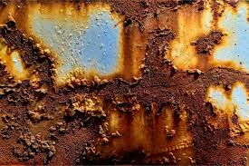
image2
Visual asset collected for the project.
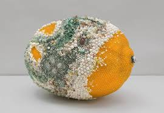
image3
Visual asset collected for the project.
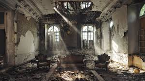
image4
Visual asset collected for the project.
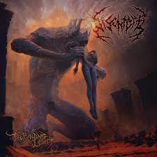
image5
Visual asset collected for the project.
image6
Visual asset collected for the project.
image7
Visual asset collected for the project.
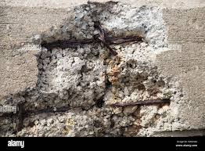
image8
Visual asset collected for the project.
image9
Visual asset collected for the project.
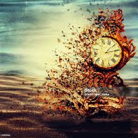
image10
Visual asset collected for the project.
image11
Visual asset collected for the project.
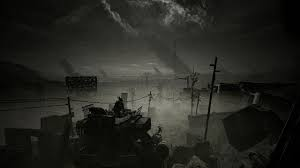
image12
Visual asset collected for the project.
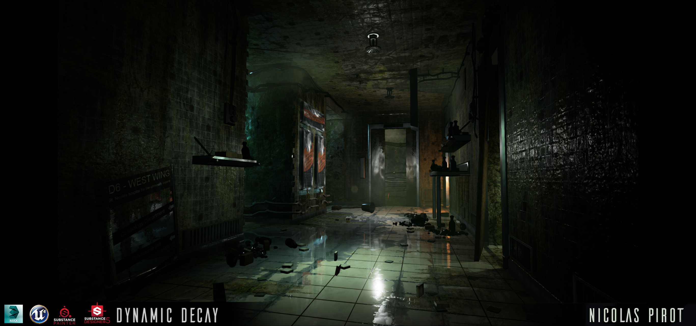
image13
Visual asset collected for the project.
image14
Visual asset collected for the project.
image16
Visual asset collected for the project.
image17
Visual asset collected for the project.
image18
Visual asset collected for the project.
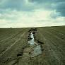
image19
Visual asset collected for the project.
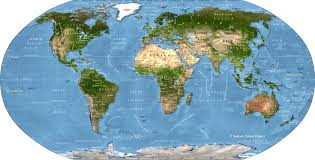
image20
Visual asset collected for the project.
image21
Visual asset collected for the project.
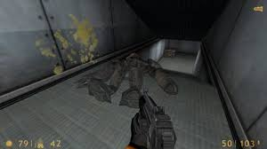
image22
Visual asset collected for the project.
image24
Visual asset collected for the project.
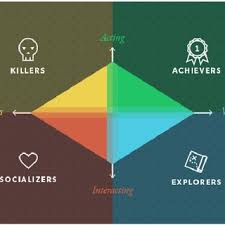
image25
Visual asset collected for the project.
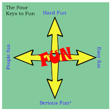
image26
Visual asset collected for the project.
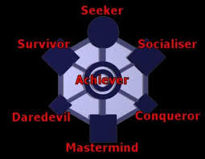
image27
Visual asset collected for the project.
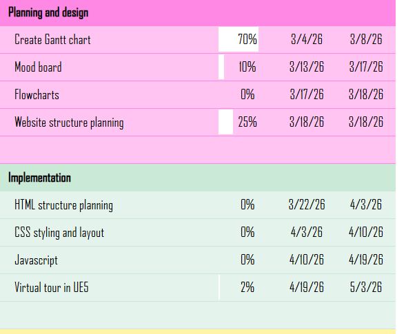
image28
Visual asset collected for the project.
Feedback received throughout the project, and my responses to each point.
"Tested the website and it looks great. Works perfectly well with no issues. The design is very clean and the content is well-organized. I like how the different sections are clearly defined and easy to navigate. The use of images and media adds a nice touch and helps to illustrate the theme of decay effectively. Overall, it's a strong start and I'm excited to see how it develops further."
"In Virtual Tour section, removing or changing the dots to something different might be much better. Some buttons are giving error. you could actaully make the buttons background in different colour when hovered the text. Also the website is too dark, you could add different colours to each section and add some different animations. On mobile version, the mouse following ring stays in one place and not reacting on finger and actually users can't remove it from the screen, you could just turn it off for mobile version."
"The website resembles a post apocalyptic vibe which is visually amazing and engaging. I believe there is no navigation bar since it didn't show when i was using my mobile phone. this is a great website and it shows clear description and information of the said pages"
A critical reflection on the final outcome — what worked, what could be improved, and what I would do differently.
My original project brief was to create an immersive post-apocalyptic virtual tour called Echoes of Earth using Unreal Engine 5. The aim was to create a realistic abandoned environment that explored environmental decay, isolation, and nature reclaiming the world after humanity disappeared. The project was intended to combine cinematic visuals, storytelling, and interactivity to create an engaging experience for users.
Throughout development, I had to work within several constraints, including limited time, technical difficulties with Unreal Engine 5, and my own skill level while learning advanced software. Because of these challenges, I adapted the project into an interactive website developed in Visual Studio Code using HTML, CSS, and JavaScript. Before starting production, I analysed the project requirements by reviewing the brief, researching similar projects, and creating plans for the visual style, layout, and development process.
Research played an important role in shaping the final outcome of Echoes of Earth. I researched post-apocalyptic games such as The Last of Us and Metro Exodus, focusing on environmental storytelling, abandoned architecture, lighting, and atmospheric world design. I also explored cinematic websites, concept art, and photography of urban decay to better understand how visual elements could communicate emotion and narrative.
This research strongly influenced my design decisions, including the dark colour palette, distressed visual style, typography, animations, and environmental themes used throughout the website. I communicated my ideas through sketches, mood boards, visual references, and early website layouts before developing the final design. These planning methods helped me maintain a consistent atmosphere and identity across the entire project.
During development, I used a range of practical and technical skills to create the project. These included HTML, CSS, and JavaScript within Visual Studio Code to build the website structure, animations, navigation system, and interactive elements. I also experimented with Unreal Engine 5 during the early stages of development while planning the original virtual tour concept.
To manage my workflow, I organised tasks into stages such as research, planning, design, coding, and testing. I regularly reviewed my progress and adapted the project when technical issues affected development. Although I was unable to complete the Unreal Engine 5 version, I successfully applied my web development skills to create a final website that reflected the atmosphere and vision of the original idea.
My final project was only partially successful because I was unable to fully complete the Unreal Engine 5 virtual tour that I originally planned. Due to time limitations and technical challenges, I instead focused on creating the website version of the project in Visual Studio Code. Although this changed the direction of the project, the final outcome still successfully communicated the atmosphere, themes, and visual identity of Echoes of Earth.
The strongest aspects of the project were the visual design, environmental storytelling, and overall cinematic presentation. However, some advanced interactive features and the full immersive UE5 experience were not completed. If I had more time, I would improve the responsiveness, add more interactive content, create additional custom assets, and complete the Unreal Engine 5 virtual environment to fully achieve my original vision.